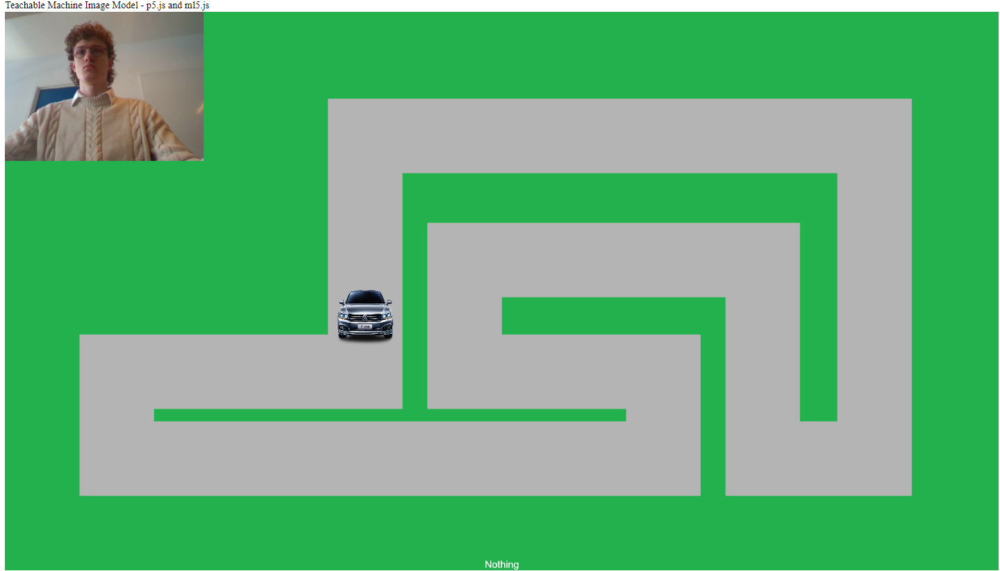
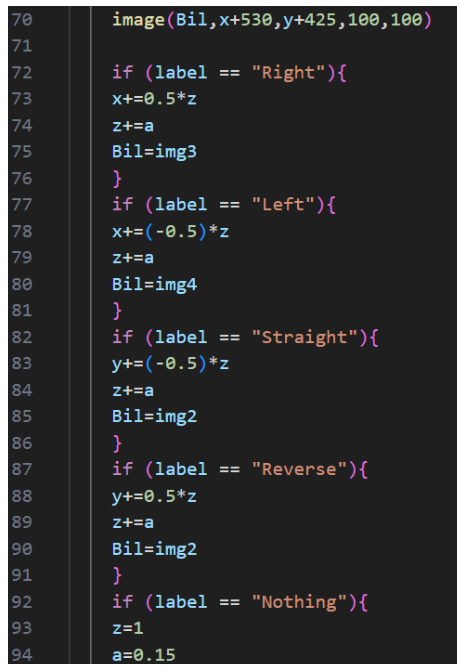

Projekt - selvkørende bil
Problem
Vi skal skabe et program, hvor en bil skal kunne navigere en virtuel og skal kunne stoppe for rødt
Bilen skal have input fra kameraet
Hvordan løser vi problemet
- Vores program, kan genkende og registrere billeder af diverse skilte
- Det skal kunne handle efter hvad skiltet fortæller det
Her ses et uddrag fra midten af programmet, med bilen værende stillestående

Eksempel på kode

- 1. Indsætter billedet af bilen, på koordinater på vejen, som kan ændres vha variablen x og y, og angiver størrelsen
- 2. Spørg som programmet registrerer at labelet er "Right"
- 3. Ændre x med en halv af variablen z
- 4. Ændre z med konstanten a (acceleration)
- 5.Spørg som programmet registrerer at labelet er "Right"
- 6. Ændre x med en halv af variablen z
- 7. Ændre z med konstanten a (acceleration)
- 8. Spørg som programmet registrerer at labelet er "Right"
- 9. Ændre x med en halv af variablen z
- 10. Ændre z med konstanten a (acceleration)
- 11. Spørg som programmet registrerer at labelet er "Right"
- 12. Ændre x med en halv af variablen z
- 13. Ændre z med konstanten a (acceleration)
- 8.
- 9.
- 10.
- 12.
- 13.
Links til projekt-undersider
Tilbage til hovedsiden
Projektbeskrivelse webteknologier
Billedemanipulation
Projektbeskrivelse Pandaspil